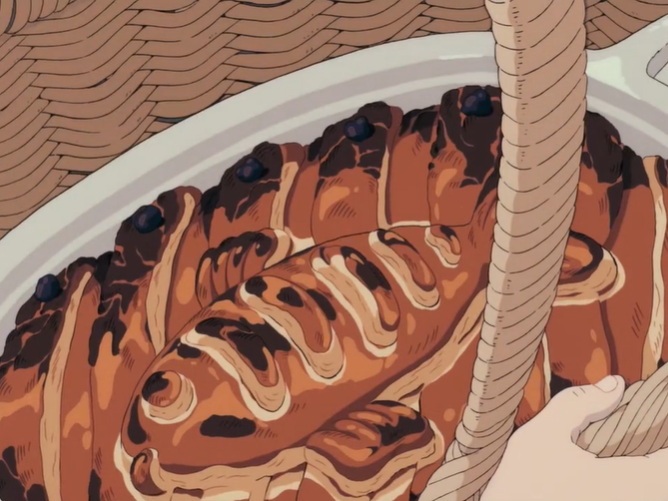

Inspired by Kiki’s Delivery Service — warm kitchens, kind hearts, and birthday pie deliveries.
Grandma’s specialty! It’s a bit of work to make, so it wouldn’t hurt to ask a young witch for help around the house when making it.
Better hurry and get that delivery going before you miss the birthday party! Yield: 4 to 6 servings Prep time: 35 minutes Cook time: 1 hour 15 minutes
Pumpkin Filling
2 tbsp salted butter
4 cups cubed pumpkin
1 cup water
1 tsp salt
Black pepper, to taste
1 tsp ground cinnamon
½ tsp ground nutmeg
¼ cup heavy cream
Herring/Fish Filling
1 lb skin-on herring or white fish
1 tsp fish seasoning (like Old Bay)
½ tsp dried mixed herbs
2 tbsp neutral oil
1 medium yellow onion, diced
1½ cups diced carrots
3 cloves garlic, diced
1½ cups mushrooms, sliced
½ cup white wine
3 tbsp salted butter
3 tbsp flour
1 cup cream
1 bay leaf
3 sprigs fresh thyme
Juice + zest of 1 lemon
Salt and pepper, to taste
Assembly
1 sheet puff pastry, ¼ thick
1 egg, beaten
4–5 black olives, sliced

Perfect for a cozy delivery 🧹
Instructions
To make the pumpkin filling, melt 2 tablespoons of butter in a large pot. Add the cubed pumpkin and sauté for a few minutes, until it has gained some caramelization. Add water and cover the pot with a lid to steam the pumpkin for 5 to 10 minutes.
Once the pumpkin has softened, add the teaspoon of salt, crack of black pepper, cinnamon, and nutmeg. Using a masher, mash the pumpkin mixture in the pot until smooth. Add the heavy cream and mix until it is well incorporated. Set aside.
Season your herring fillets or other fish fillets with the premixed fish spice and dried mixed herbs. Let the fillets rest for 10 minutes.
In a separate nonstick frying pan, add the oil and fry the fish fillets skin-side down. Cook for 1 to 2 minutes until the skin has begun to crisp up. Flip and cook the other side until it is firm. Set aside.
To the same frying pan, add the diced onion and carrots, and fry until softened.
Add the diced garlic and sliced mushrooms to the pan and sauté until softened and browned.
Add the white wine to the pan to deglaze. Add the butter to the same pan and make sure it melts.
Add 3 tablespoons of flour to the pan and mix until it forms a roux (a tan-colored thickening agent used for sauce recipes).
Add cream to the pan and stir until it is well incorporated and the roux is smooth.
Add the bay leaf and fresh thyme to your cream mixture. Let it simmer for 1 minute.
Add the cooked herring fillets to the pan and let the mixture simmer for 3 minutes.
Add the lemon juice and zest to the mixture. Break the herring fillets into chunks and skim any excess oil from the cream mixture. Add salt and pepper to taste. Discard the bay leaf and sprigs of thyme. Set aside.
ASSEMBLING
Preheat your oven to 350°F.
In an 8 x 12-inch ovenproof dish, spread an even layer of the pumpkin mixture on the bottom of the dish.
Place the fish mixture on top of the pumpkin layer.
Cover the mixture with a layer of rolled-out, store-bought puff pastry, ¼-inch thick, and tuck in the edges.
Using some leftover puff pastry, cut out 5 rectangular strips (just over ½ inch in width) and the outline of a fish (including eyes, mouth, fins, and gills).
Lay your puff pastry stripes diagonally across the casserole dish. Add the puff pastry fish in the middle of the casserole dish.
Brush the top of your puff pastry liberally with a beaten egg and add sliced olives at the end of each puff pastry strip.
Bake for 35 to 40 minutes until golden.
Serve warm, with a side of fresh garden salad and crusty ciabatta bread.